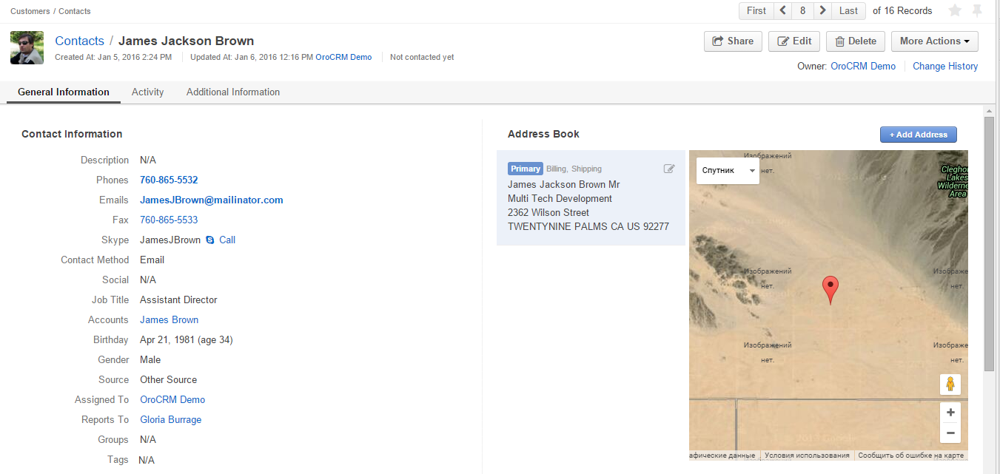

View Pages¶
Overview¶
To see more details of a specific record, and to work directly with the record (i.e., create a task related to a customer, appoint a calendar event for a user, turn a cart into an order, share a contact, and so on), you need to get to its View page.
For example, this is a View page of a contact.
On this View page, you can see all the details of the record and its location on the map. You can use the links and action buttons as described in this article.
Get To a View Page¶
There are several ways to get to a View page:
- Select the relevant record in a grid (click the icon).
- Find the records in the Search Panel.
- Click the Save and Close button on a Create/Edit form.
What You Can See on a View Page¶
Details of the chosen record are displayed on a View page. (The list of properties shown is defined by the system administrator with the Show On View setting of the entity fields).
Information in a View page is allocated in sections that you can easily switch between. All the sections are placed one after another, so you can also scroll down to find information.
For example, this is a View page of an opportunity with General Information, Activities and Additional Information sections:
Click the section name in order to move it to the top of the page:
What You Can Do From a View Page¶
Manage a Record From a View Page¶
Action buttons at the top right of each View page reflect the actions that you can do with the record.
These include the ability to share a record with other users (if applicable), go to the Create/Edit form, delete a record, and perform different activities related to a record (such as make a task, create a calendar event, log a call, and write an email).
If there are four or less actions available for a record, a separate button is created for each of them.
If there are more than four actions available for a record, they will be collected under the {Entity Name} Actions drop-down.

Inline Editing¶
Inline editing is available for a particular number of entities, such as opportunities, tasks or contacts.
To be able to perform inline editing from a record’s view page:
- Point to the value you want to edit. If the Edit Inline icon appears next to it, inline editing is available for the value.
- Click the Edit Inline icon. Alternatively, double click on the value itself.

Modify the value as required.
Inline editors can be of different types. The simplest inline editor is a plain text field, where you can type the required value.
In some cases, you will need to select the value from a dropdown.
Click the
 Save Changes icon to save a new value, or click the Discard Changes icon to return to the old value.
Save Changes icon to save a new value, or click the Discard Changes icon to return to the old value.
Review the Record History¶
If the user is allowed to do this (i.e., the Data Audit capability has been enabled for at least one of the user’s roles, there will be a Change History link at the top of the page.
Use Contact Details on a View Page¶
Contact details related to a record are displayed as links.
You can click the phone number link to call it via Hangouts or log a call, start writing an email with a click on the address, initiate Skype session directly from the View page.
Add a Tag to the Record¶
Tags are non-hierarchical keywords assigned to a record to provide additional information, simplify search and filter records. Tags can be added to a record from its View page, as described in the Tags guide.
Get to Other Pages¶
- You can get to the View page of the previous, the next, the first and the last records of the grid with the paginator in the top right corner of the page:
- If there is a related entity, its identifier will be a link to the View page of this entity.
- You can get to the corresponding grid of records with the link in the top left corner of the page:

Hint
If you have reached a View page or Create/Edit form from a grid, and now click link to get back to the grid, this grid will be look in the same as it did when you left it for the View page (the same filters and order applied).